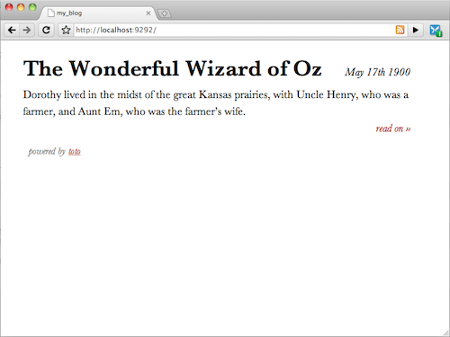
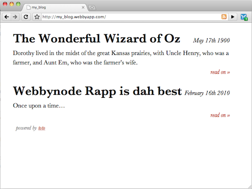

From Zero to Blog in minutes with toto
Let’s deploy a blog to your Webby using the amazingly easy toto engine (webpage and GitHub).
Installing toto
The first step is to install the toto gem locally:
$ sudo gem install rack toto
NOTE: If you’re using rvm, don’t use sudo
Getting dorothy
There’s a great template for toto called dorothy. You just have to clone it using git, giving your blog name:
$ git clone git://github.com/cloudhead/dorothy.git my_blog $ cd my_blog
Configuring your blog
After cloning dorothy, edit the file config.ru in the root of the newly created folder and configure your blog:
require 'toto'
# Rack config
use Rack::Static, :urls => ['/css', '/js', '/images', '/favicon.ico'],
:root => 'public'
use Rack::CommonLogger
if ENV['RACK_ENV'] == 'development'
use Rack::ShowExceptions
end
#
# Create and configure a toto instance
#
toto = Toto::Server.new do
#
# Add your settings here
# set [:setting], [value]
#
set :author, "Felipe Coury" # blog author
set :title, Dir.pwd.split('/').last # site title
set :root, "index" # page to load on /
set :date, lambda {|now| now.strftime("%d/%m/%Y") } # date format
set :markdown, :smart # use markdown
set :disqus, false # disqus id, or false
set :summary, :max => 150, :delim => /~/ # length of article
set :ext, 'txt' # file extension
set :cache, 28800 # cache duration
set :date, lambda {|now| now.strftime("%B #{now.day.ordinal} %Y") }
end
run toto
Running locally
To run toto locally, just run config.ru:
$ rackup
If all went well, you should see that toto started:
[2010-02-16 23:54:13] INFO WEBrick 1.3.1 [2010-02-16 23:54:13] INFO ruby 1.8.7 (2009-12-24) [i686-darwin10.2.0] [2010-02-16 23:54:13] INFO WEBrick::HTTPServer#start: pid=9629 port=9292
Now visit http://localhost:9292/ and you should see your blog:

Creating a new article
To create a new article, just run rake new, like below:
$ rake new
(in /Users/fcoury/Projects/my_blog)
Title: Webbynode Rapp is dah best
toto ~ an article was created for you at
articles/2010-02-16-webbynode-rapp-is-dah-best.txt.
And just edit the resulting file in your favorite editor.
Deploying
To deploy your blog to Webbynode using Rapp is quite easy.
First, install the toto gem:
$ wn remote sudo gem install toto
And then deploy your blog:
$ wn init webby3067
[Webbynode] Initializing application my_blog with dns my_blog
Retrieving IP for Webby webby3067...
Initializing directory structure...
Adding webbynode as git remote...
[Webbynode] Application my_blog ready for Rapid Deployment
Now commit your changes and push:
$ git add . $ git commit -m "Initial commit" [master 3b89caa] Initial commit 4 files changed, 47 insertions(+), 35 deletions(-) create mode 100644 .gitignore create mode 100755 .pushand create mode 100644 .webbynode/aliases create mode 100644 .webbynode/config create mode 100644 .webbynode/tasks/after_push create mode 100644 .webbynode/tasks/before_push create mode 100644 articles/2010-02-16-webbynode-rapp-is-dah-best.txt rewrite config.ru (64%) $ wn push [Webbynode] Pushing my_blog mkdir: created directory `my_blog' Counting objects: 183, done. Delta compression using up to 2 threads. Compressing objects: 100% (95/95), done. Writing objects: 100% (183/183), 20.41 KiB, done. Total 183 (delta 74), reused 173 (delta 72) Checked out master branch ---------------------------- Webbynode git deployment ---------------------------- Nginx+Passenger webserver detected... Setting up DNS... Deploying application my_blog as my_blog.webbyapp.com... Configuring Rack application... => Configuring nginx vHost... => Configuring database... Restarting nginx my_blog deployed successfully. Created http://my_blog.webbyapp.com/ To git@208.88.124.89:my_blog * [new branch] master -> master [Webbynode] Finished pushing my_blog
And voilà, your blog is ready to go:
